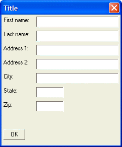

Address Dialog - Spacing of Controls
The spacing of controls on a dialog is controlled by the height and width of a "standard" row and column. The size of this "standard" row and column is, in turn, controlled by the default font used for static text on the dialog.
Using the {Ysize=} and {Xsize=} commands, you can alter the spacing of controls on a dialog.
The syntax for these commands is:
{Ysize=rows} {Xsize=characters} |
For example, the command {Ysize=2} changes the default vertical spacing between controls to two rows. You can specify fractional rows. For example, {Ysize=1.5}. The command {Xsize=2} changes the default horizontal spacing between controls to two characters.
 Note : You must not leave a space on either side of the '=' sign.
Note : You must not leave a space on either side of the '=' sign.
The following script uses the {Ysize} command to increase the default spacing of controls from the height of one "standard line" to the height of two "standard lines":
result=ui_dlg_box("Title",<<%dlg% {ysize=2} First name:| [.32firstname]; Last name:| [.32lastname]; Address 1:| [.32address1]; Address 2:| [.32address2]; City:| [.32City]; State:| [State]; Zip:| [Zip]; {lf}; %dlg%) |
This script produces this dialog:

Lesson 3: Address Dialog - Increasing the "Y" Size
Next
Limitations
Desktop applications only.